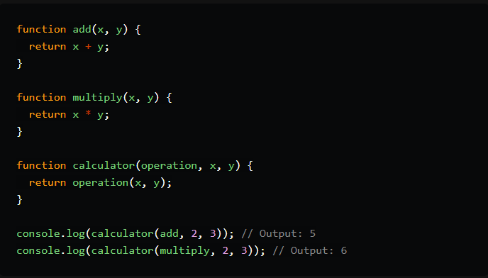
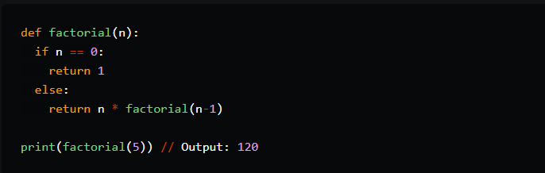
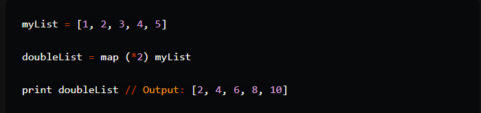
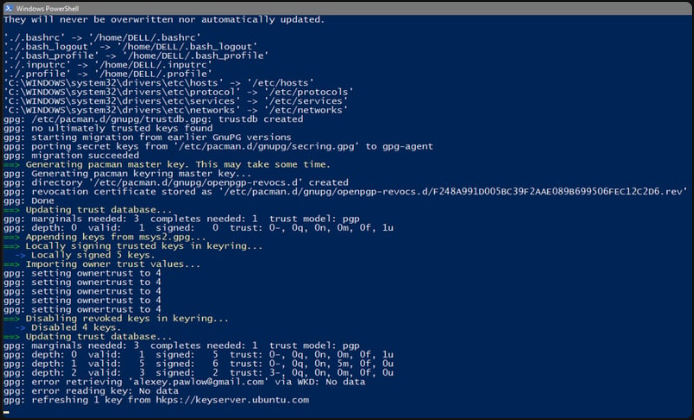
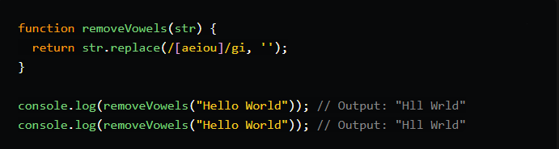
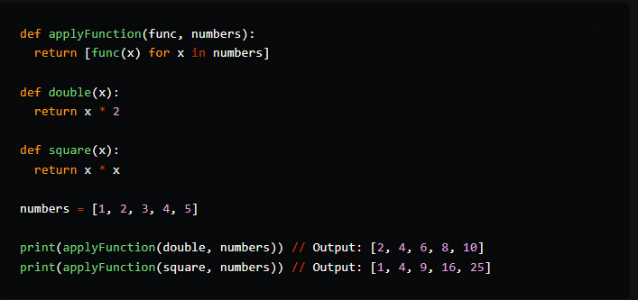
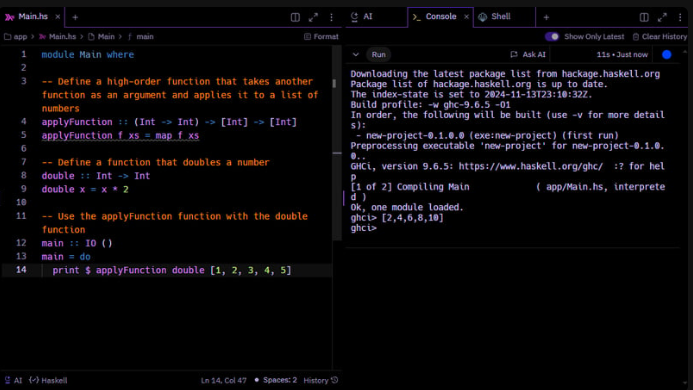

DevBlog - A Blog Template Made For Developers
Welcome to my blog. Subscribe and get my latest blog post in your inbox.

A Guide to Functional Programming
Functional programming has gained popularity due to its ability to provide efficient and scalable solutions. It's a declarative approach to programming, where the focus is on specifying what the program should accomplish, rather than how it should accomplish it.
In this post, we'll look into the core concepts and advantages of functional programming, as well as explore some of the most popular functional programming languages.
What is Functional Programming?😙
Functional programming is a declarative programming paradigm that focuses on applying pure functions in sequence to solve complex problems. It treats functions as first-class citizens, allowing them to be passed as arguments to other functions, returned as values from functions, and stored in data structures.
👉Functional programming excels at mathematical functions where values don't have any correlation and doesn't make use of concepts like shared state and mutable data used in object-oriented programming.
Core Concepts of Functional Programming
#️⃣1-First-class functions: 🚀
Functions are treated as data type variables and can be used like any other variables.
Example 1: In JavaScript, we can pass a function as an argument to another function, just like we would pass a variable.

#️⃣2-Recursion:🚀
Functional programs avoid constructions that create different outputs on every execution. Instead, recursive functions call themselves repeatedly until they reach the desired state or solution known as the base case.
Example: In Python, we can use recursion to calculate the factorial of a number.

In this example, the factorial function calls itself repeatedly until it reaches the base case (n == 0), at which point it returns the final result.
#️⃣3-Immutability:🚀
Variables cannot be modified after being created. This ensures that the program's state remains constant throughout its runtime.
Example: In Haskell, we can create an immutable list and then use a function to create a new list with the elements transformed.

In this example, the myList variable is immutable, and we create a new list doubleList by applying the map function to myList. The original list remains unchanged.
For more resources on Haskell: www.haskell.org/documentation/ ▶️

#️⃣4-Pure functions:🚀
Pure functions produce the same output if the given input is the same and have no side effects.
Example: In JavaScript, we can create a pure function that takes a string as input and returns the string with all vowels removed.

In this example, the removeVowels function takes a string as input and returns a new string with all vowels removed. The function has no side effects and always returns the same output given the same input.
#️⃣5-High-order functions:🚀
Functions that accept other functions as parameters or return functions as outputs.

In this example, the applyFunction function takes another function (double or square) as an argument, and applies it to a list of numbers. The function returns a new list with the results of applying the function to each number.
Example 2: Haskell's high-order functions accept other functions as parameters or return functions as outputs.👇👇

- Easy to debug: Pure functions produce the same output as the given input, making it easier to check for errors in code.
- Lazy evaluation: Computations are only evaluated when needed, reducing unnecessary computations.
- Supports parallel programming: Immutable variables make it easy to create parallel programs, reducing the amount of change within the program.
- Easy to read: Functions are easy to read and understand, making it easier to understand the codebase and purpose.
- Efficient: Functional programs don't rely on external sources or variables, making them easily reusable across the program.
💻Advantages of Functional Programming
👍Drawbacks of Functional Programming
- Terminology problems: Functional programming has a lot of terminologies that may be difficult to explain to a layman.
- Recursion: Although recursion is a powerful feature, it can be expensive to use, requiring higher memory usage. Popular Functional Programming Languages
- Haskell: A statically typed programming language designed specifically for functional programming.
- Python: Although designed for object-oriented programming, Python supports functional programming features like lambda expressions and attributes.
- Erlang: A functional programming language best suited for concurrent systems, used by messaging apps like WhatsApp and Discord.
- JavaScript: Supports functional programming features like lambda expressions and attributes, making it a popular choice among multi-paradigm languages.
- Clojure: A functional programming language that provides tools to avoid mutable states, supporting both mutable and immutable data types.
- Scala: A language that supports both functional and object-oriented programming, designed to address the shortcomings of Java.
- Rust: A systems programming language that supports functional programming concepts like immutability and recursion.
- Swift: A modern programming language developed by Apple, which supports functional programming features like closures and higher-order functions.
- F#: A functional programming language developed by Microsoft, which is part of the .NET ecosystem.
- Lisp: A family of programming languages that are based on functional programming concepts, including Scheme and Common Lisp.
- OCaml: A functional programming language developed by INRIA, which is used in a variety of applications, including web development and scientific computing.
- R: A programming language and environment for statistical computing and graphics, which supports functional programming concepts like closures and higher-order functions.
- Julia: A high-performance programming language that supports functional programming concepts like immutability and recursion.
- Kotlin: A modern programming language developed by JetBrains, which supports functional programming features like lambda expressions and higher-order functions.
- TypeScript: A statically typed programming language developed by Microsoft, which supports functional programming features like lambda expressions and higher-order functions. NOTE:There are still many other programming languages that support functional programming concepts.
Conclusion
Functional programming is a powerful paradigm that provides efficient and scalable solutions to complex business problems. By understanding the core concepts and advantages of functional programming, developers can unlock new ways to solve problems and increase their chances of standing out in the global talent pool. Whether you're a seasoned programmer or just starting out, functional programming is definitely worth exploring.
- Functional programming is a declarative programming paradigm that focuses on applying pure functions in sequence to solve complex problems.
- Core concepts of functional programming include first-class functions, recursion, immutability, pure functions, and high-order functions.
- Advantages of functional programming include easy debugging, lazy evaluation, support for parallel programming, easy readability, and efficiency.
- Drawbacks of functional programming include terminology problems and recursion.
- Drawbacks of functional programming include terminology problems and recursion.
- Popular functional programming languages include Haskell, OCaml, Elixir, Python, Erlang, JavaScript, Clojure, and Scala.